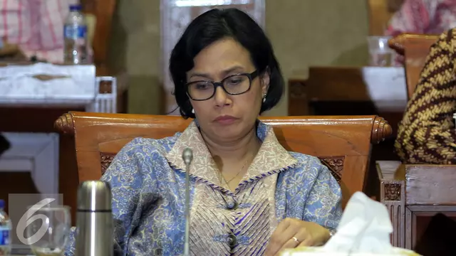
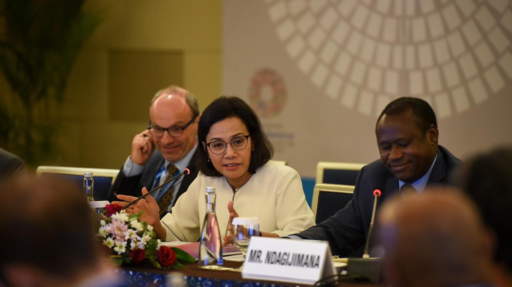

Diposting Oleh Merdeka.com, Arthur Gideon

Liputan6.com, Jakarta - Menteri Keuangan Sri Mulyani menekankan pentingnya upaya menjaga keseimbangan antara aliran devisa yang masuk maupun keluar. Hal ini perlu dilakukan untuk menjaga kesehatan transaksi berjalan.
Dia menjelaskan, defisit transaksi berjalan atau current account deficit (CAD) terjadi karena aliran devisa yang keluar lebih banyak dibandingkan devisa yang masuk.
Mantan Direktur Pelaksana Bank Dunia ini menjelaskan sektor yang cukup membantu dalam mengerek devisa masuk, seperti sektor pariwisata. Selain itu ada pula investasi yang menarik modal dari luar masuk ke Indonesia.
"Hal-hal yang bisa meng-generate devisa seperti pariwisata, ekspor, atau kalau kita buka invetasi, kemudian datanglah capital inflow," kata dia, di acara 'Indonesian Woman Forum 2018', Jakarta, Jumat (9/11/2018).
Dia pun berharap agar masyarakat turut ambil bagian dalam upaya menjaga kesehatan transaksi berjalan serta keseimbangan aliran devisa yang masuk maupun keluar.
Hal yang dapat dilakukan adalah dengan mengurangi kegiatan yang dapat membawa devisa ke luar, seperti berliburan atau berjalan-jalan ke luar negeri.
"Pasti saya yakin akhir tahun ini sudah pikiran mau ke mana. Moga-moga tidak mengeluarkan devisa. Most likely mengeluarkan (devisa). Itu tourism ke luar dibandingkan ke dalam," ungkapnya.
========================================2 dari 2 Halaman======================================
Ekonomi Global Tidak Ramah

Dia menjelaskan saat ini situasi perekonomian global sedang tidak ramah. Pemerintah akan berhati-hati dalam membuat kebijakan sehingga dapat menjaga fondasi perekonomian yang tetap kuat. Salah satunya terlihat dari transaksi berjalan yang sehat dan seimbang.
"Pasti ada aktivitas yang mengeluarkan devisa. Untuk aktivitas yang mengeluarkan devisa harus diseimbangkan," tandasnya.
Reporter: Wilfridus Setu Embu